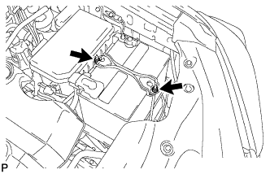
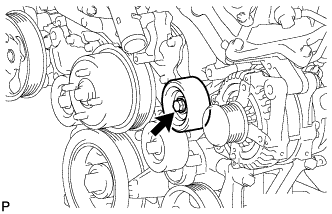

ГЕНЕРАТОР > СНЯТИЕ |
| 1. ОТСОЕДИНИТЕ ПРОВОД ОТ ОТРИЦАТЕЛЬНОГО ВЫВОДА АККУМУЛЯТОРНОЙ БАТАРЕИ |
| 2. ОТСОЕДИНИТЕ ПРОВОД ОТ ПОЛОЖИТЕЛЬНОГО ВЫВОДА АККУМУЛЯТОРНОЙ БАТАРЕИ |
| 3. СНИМИТЕ ПРИЖИМ АККУМУЛЯТОРНОЙ БАТАРЕИ |
|  |
Ослабьте 2 гайки и снимите прижим аккумуляторной батареи.
| 4. СНИМИТЕ АККУМУЛЯТОРНУЮ БАТАРЕЮ |
| 5. СНИМИТЕ ЛОТОК АККУМУЛЯТОРНОЙ БАТАРЕИ |
| 6. СНИМИТЕ ДЕКОРАТИВНУЮ КРЫШКУ V-ОБРАЗНОГО ДВИГАТЕЛЯ |
 |
Поднимите переднюю часть декоративной крышки V-образного двигателя, чтобы открепить 2 штифта. Затем снимите 2 крюка декоративной крышки V-образного двигателя с кронштейна, чтобы снять декоративную крышку V-образного двигателя.
| *1 | Штифт |
| *2 | Крюк |
| 7. СНИМИТЕ ПОЛИКЛИНОВОЙ РЕМЕНЬ ВЕНТИЛЯТОРА И ГЕНЕРАТОРА |
 |
Поворачивая натяжитель ремня против часовой стрелки, расположите технологическое отверстие для натяжителя ремня в месте крепления натяжителя ремня, а затем вставьте в технологическое отверстие стержень диаметром 6 мм (0,236 дюйма), чтобы закрепить натяжитель на месте.
Снимите поликлиновой ремень.
| 8. СНИМИТЕ ОПОРНЫЙ РОЛИК № 2 В СБОРЕ |
|  |
Интегрированного типа:
Выверните болт и снимите опорный ролик № 2.
Для раздельного типа:
Выверните болт и снимите крышку опорного ролика № 2, опорный ролик № 2 и крышку опорного ролика.
| 9. СНИМИТЕ КРОНШТЕЙН ЗАЖИМА ЖГУТА ПРОВОДОВ |
 |
Снимите зажим.
Выверните болт и снимите кронштейн зажима жгута проводов.
| 10. СНИМИТЕ ТЕПЛОЗАЩИТНЫЙ ЭКРАН ВЫПУСКНОГО КОЛЛЕКТОРА № 2 |
 |
Отверните 3 болта и снимите теплозащитный экран.
| 11. СНИМИТЕ ГЕНЕРАТОР В СБОРЕ |
 |
Откройте крышку контакта.
Отверните гайку и отсоедините жгут проводов от контакта B.
Отсоедините разъем генератора от генератора в сборе.
 |
Выверните 2 болта и отсоедините жгут проводов.
 |
Отсоедините зажим жгута проводов.
Выверните болт и отсоедините кронштейн генератора.
 |
Выверните 2 болта и снимите генератор в сборе.
 |
Выверните болт и снимите кронштейн генератора.